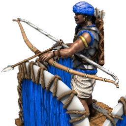
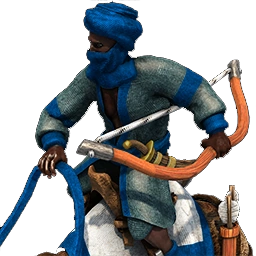
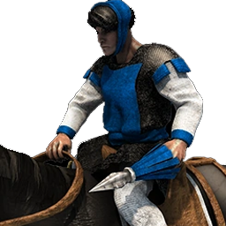
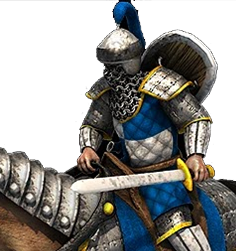
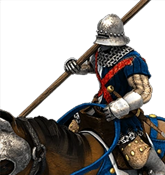
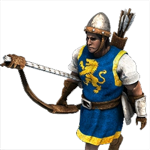
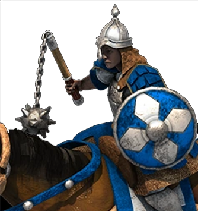
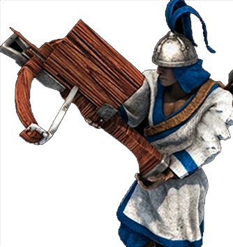
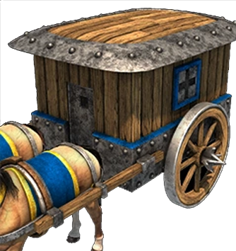

AZTECAS
Civilización de infantería y monjes
- Aldeanos: cargan +3 recursos
- Unidades militares: se crean 11% más rápido
- Monjes: +5 puntos de vida por cada tecnología desarrollada en el monasterio
- Comienzan con +50 de oro
-
Unidad única:
Guerrero Jaguar (infantería) -
Tecnologías únicas:
- Átlatl (hostigadores: +1 de ataque, +1 de alcance)
- Guerras Floridas (infantería: +4 de ataque)
-
Bonificación para el equipo:
Las reliquias generan +33% de oro.


BENGALÍES
Civilización naval y de elefantes
- Las unidades en elefante reciben un 25% menos de daño adicional y son más resistentes a la conversión
- Los centros urbanos generan 2 aldeanos al avanzar a la siguiente Edad
- Los barcos regeneran 15 puntos de vida por minuto
- Los monjes tienen +3/+3P de armadura
-
Unidad única:
Ratha (arquero a caballo/caballería) -
Tecnologías únicas:
- Paiks (Los rathas y elefantes atacan un 20% más rápido)
- Mahayana (Los aldeanos ocupan un 10% menos de espacio de población)
-
Bonificación para el equipo:
Las unidades mercantes producen un 10% de comida, además de oro.

BEREBERES
Civilización naval y de caballería
- Los aldeanos se mueven 10% más rápido
- Las unidades del establo cuestan -15% en Castillos, -20% en Imperial
- Los barcos se mueven 10% más rápido
-
Unidad única:
Arquero en camello (arquero montado), Escaramuzador zenete (hostigador montado) -
Tecnologías únicas:
- Kasbah (los castillos del equipo trabajan 25% más rápido)
- Camellos Maghrebi (las unidades de camellos se recuperan solas)
-
Bonificación para el equipo:
Todos pueden entrenar escaramuzadores zenetes en la galería de tiro con arco a partir de la Edad de los Castillos.


BIRMANOS
Civilización de monjes y elefantes
- Mejoras de campamento maderero gratis
- Infantería obtiene +1 de ataque al avanzar a cada edad (a partir de la Edad Feudal)
- Elefantes de batalla +1/+1 punto de armadura
- Las tecnologías del monasterio cuestan -50%
-
Unidad única:
Arambai (caballería con ataque a distancia) -
Tecnologías únicas:
- Howdah (Elefantes de batalla +1/+1 puntos de armadura)
- Caballería manipur (Caballería +5 de ataque contra arqueros)
-
Bonificación para el equipo:
Reliquias visibles en el mapa desde el inicio.

BIZANTINOS
Civilización defensiva
- Edificios: +10% de puntos de vida en Alta Edad Media, +20% en Feudal, +30% en Castillos y +40% en Imperial
- Camellos, hostigadores, piqueros y alabarderos: cuestan -25%
- Barcos incendiarios: atacan 25% más rápido
- Avanzar a la Edad Imperial cuesta -33%
- Guardia urbana y Patrulla urbana gratis
-
Unidad única:
Catafracta (caballería) -
Tecnologías únicas:
- Fuego griego (barcos incendiarios: +1 de alcance)
- Logística (las Catafractas causan daño por pisoteo)
-
Bonificación para el equipo:
Monjes: curan a las unidades heridas +100% más rápido.
BOHEMIOS
Civilización de pólvora y monjes
- Las herrerías, los monasterios y las universidades cuestan -100 de madera
- Química y artillero manual disponibles desde la Edad de los Castillos
- La línea de lanceros inflige +25% de daño de bonificación
- El Fervor y la Santidad afectan a los aldeanos
- Tecnologías gratis en los campos mineros
-
Unidad única:
Vagón husita (arma de asedio), Obús (cañón de asedio) -
Tecnologías únicas:
- Tácticas de Wagenburg (las unidades de pólvora se mueven 15% más rápido)
- Reformas husitas (el costo en oro de los monjes y las tecnologías del monasterio se sustituye con comida)
-
Bonificación para el equipo:
Los mercados trabajan 80% más rápido.


BORGOÑESES
Civilización de caballería
- Las mejoras económicas están disponibles una edad antes y cuestan -40% de comida
- Las tecnologías de los establos cuestan -50%
- Mejora a Caballero disponible desde la Edad de los Castillos
- Unidades de pólvora: +25% de ataque
-
Unidad única:
Coustillier (caballería), Milicia flamenca (infantería) -
Tecnologías únicas:
- Viñedos de Borgoña (los granjeros generan oro lentamente, además de comida)
- Revolución Flamenca (mejora a todos los aldeanos existentes a milicia flamenca; permite crear milicia flamenca en los centros urbanos)
-
Bonificación para el equipo:
Las reliquias generan comida, además de oro.

BRITANOS
Civilización de arqueros a pie
- Centros urbanos: cuestan -50% de madera a partir de la Edad de los Castillos
- Arqueros a pie (excepto hostigadores): +1 de alcance en Castillos y en Imperial (+2 en total)
- Pastores: trabajan 25% más rápido
-
Unidad única:
Arquero con arco largo (arquero) -
Tecnologías únicas:
- Hidalgo (arqueros a pie: +1 de alcance torres: +2 de ataque)
- Lobo de guerra (los trebuchets causan daño por estallido)
-
Bonificación para el equipo:
Las galerías de tiro con arco trabajan 20% más rápido


BÚLGAROS
Civilización de infantería y caballería
- Mejoras gratis para la línea de milicia
- Los centros urbanos cuestan -50% de piedra
- Las tecnologías de los talleres de asedio y la herrería cuestan -50% de comida
- Pueden construir el Krepost
-
Unidad única:
Konnik (caballería) -
Tecnologías únicas:
- Estribos (la caballería ataca 33% más rápido)
- Bagains (línea de milicia: +5 de armadura)
-
Bonificación para el equipo:
Las herrerías trabajan 80% más rápido.
CELTAS
Civilización de infantería y asedio
- Infantería: se mueve 15% más rápido a partir de Feudal
- Leñadores: trabajan 15% más rápido
- Armas de asedio: disparan 25% más rápido
- Puede robar ovejas, y las que estén dentro del campo de visión de una unidad celta no se las puede robar nadie más
-
Unidad única:
Invasor de pasto(infantería) -
Tecnologías únicas:
- Bastión (castillos y torres disparan 25% más rápido)
- Furor celta (+40% puntos de vida para las unidades del taller de asedio)
-
Bonificación para el equipo:
Taller de asedio: 20% más rápido.

CHINOS
Civilización de arqueros
- Comienzan con +3 aldeanos, -50 de madera, -200 de comida
- Costo de tecnologías: -10% en Feudal, -15% en Castillos, -20% en Imperial
- Centros urbanos con capacidad de 10 de población y +5 de visión
- Buques de demolición: +50% puntos de vida
-
Unidad única:
Chu Ko Nu (arquero) -
Tecnologías únicas:
- Gran Muralla (murallas y torres: +30% de vida)
- Cohetería (Chu Ko Nu: +2 de ataque, Escorpiones: +4 de ataque)
-
Bonificación para el equipo:
Las granjas brindan +10% de comida.

COREANOS
Civilización naval y defensiva
- Aldeanos: +3 campo de visión
- Mineros de piedra: trabajan 20% más rápido
- Mejoras de torres gratis (la torre de bombarda requiere química)
- Mejoras gratis para las armaduras de los arqueros
- Las unidades militares (excepto armas de asedio) cuestan -20% de madera
-
Unidad única:
Carro de guerra (arquero montado), Barco Tortuga (navío de guerra) -
Tecnologías únicas:
- Eupseong (torres de guardia, de vigilancia y del homenaje: +2 de alcance)
- Shinkichon (línea de manganas: +1 de alcance)
-
Bonificación para el equipo:
Línea de manganas: se reduce su distancia mínima de ataque.